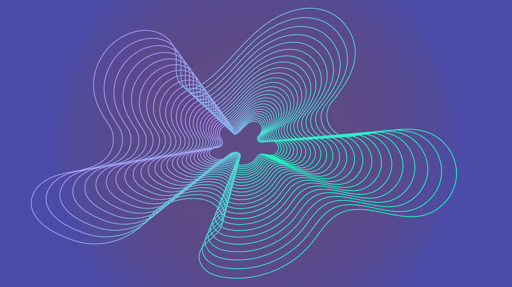
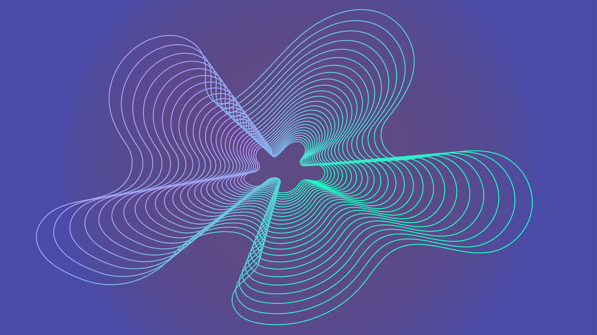

For this project, students were tasked to cover an event or practice that spread misinformation, both intentionally or otherwise. As a result, I chose to create a series of biographical websites exploring the careers of prolific Super Smash Bros. players and their involvement in harassment scandals.
Each page is split into two halves that can be toggled by a button: the first covers the player’s legacy – the second covers the allegations made against them and their individual responses. Stylistically the outcome draws inspiration from traditional athletes websites.


 
